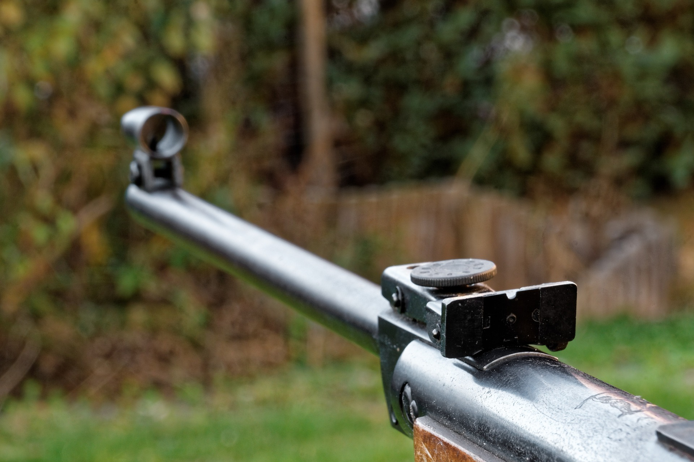
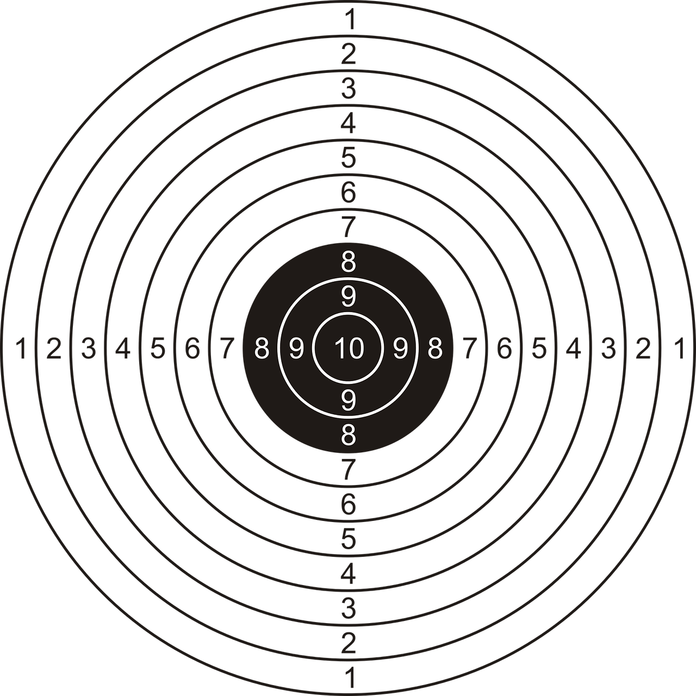

Skupienie i koncentracja, czyli strzelectwo sportowe
Mianem strzelectwa sportowego okre¶la siê dyscyplinê sportu polegaj±c± na wspó³zawodnictwie w strzelaniu ze sportowej broni palnej albo pneumatycznej do tarczy lub celów ruchomych.
Strzelectwo znalaz³o siê w programie olimpijskim ju¿ podczas pierwszych igrzysk w Atenach 1896.
Polacy zdobyli dotychczas cztery z³ote medale olimpijskie: Józef Zapêdzki w Meksyku 1968 i Monachium 1972 oraz Renata Mauer w Atlancie 1996 i Sydney 2000.

W sk³ad sportu strzeleckiego wchodz±:
strzelectwo sportowe (oparte na przepisach ISSF)
strzelectwo d³ugodystansowe (oparte na przepisach WBSF)
strzelectwo czarnoprochowe (oparte na przepisach MLAIC
strzelectwo historyczne
strzelectwo kurkowe (oparte na przepisach Bractw Kurkowych)
strzelectwo dynamiczne (oparte na przepisach IPSC, IDPA)
strzelectwo westernowe (oparte na przepisach SASS)

Sport strzelecki realizowany jest w trzech dyscyplinach: